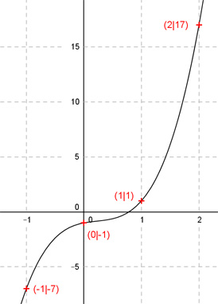

Aufgabe 52 Der Graph einer ganzrationalen Funktion 3. Grades geht durch die Punkte (0|-1), (1|1), (-1|-7) und (2|17). Wie lautet seine Funktionsgleichung?  Allgemeine Form einer ganzrationalen Funktion 3. Grades: f(x) = ax3 + bx2 + cx + d f’(x) = 3ax2 + 2bx + c f’’(x) = 6ax + 2b 4 Bedingungen: 1. Geht durch den Punkt (0|-1) bedeutet: f(0) = -1 --> a * 03 + b * 02 + c * 0 + d = -1 --> d = -1 2. Geht durch den Punkt (1|1) bedeutet: (d = -1 eingesetzt) f(1) = 1 --> a * 13 + b * 12 + c * 1 - 1 = 1 --> a + b + c - 1 = 1 |+1 --> a + b + c = 2 I 3. Geht durch den Punkt (-1|-7) bedeutet: (d = -1 eingesetzt) f(-1) = -7 --> a * (-1)3 + b * (-1)2 + c * (-1) - 1 = -7 --> -a + b - c - 1 = -7 |+1 --> -a + b - c = -6 II 4. Geht durch den Punkt (2|17) bedeutet: (d = - 1 eingesetzt) f(2) = 17 --> a * 23 + b * 22 + c * 2 - 1 = 17 --> 8a + 4b + 2c - 1 = 17 |+1 --> 8a + 4b + 2c = 18 III I * II a + b + c = 2 -a + b - c = -6 ---------------- 2b = -4 |:2 b = -2 II * 2 + III (b = -2 eingesetzt) -2a - 4 - 2c = -12 8a - 8 + 2c = 18 ------------------- 6a - 12 = 6 |+12 6a = 18 |:6 a = 3 a = 3 und b = -2 und d = -1 in I eingesetzt: 3 - 2 + c = 2 c + 1 = 2 |-1 c = 1 Gesuchte Funktionsgleichung: f(x) = 3x3 - 2x2 + x - 1